A summary of my work over the last twelve months.
I’m not usually someone who devotes much time to reflection, but over the past couple of years I’ve been finding it more and more useful. Partly that’s just because I now have to prepare quarterly tax filings for my studio, Mass-Driver — but partly because I’ve learned that unless I actually count the things I’ve done, I always underestimate my output.
This post is, for the most part, for myself: a count of what I made this year, to put my own mind at ease. It’s not a finely edited piece of prose with a meaning or conclusion, just a roughly chronological series of events. So with that out of the way, here is my year in a nutshell:
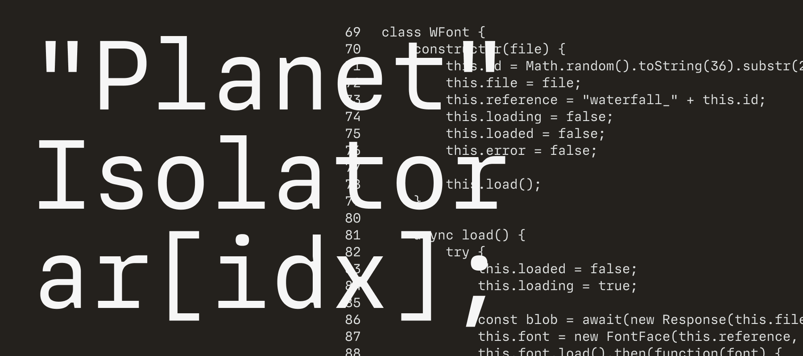
In January, I released the first version of MD IO on Future Fonts. A few months prior, I’d been struggling to find a typeface for programming which was clean (read: boring) enough to not be distracting, but also legible (as in, no two glyphs are easily confused with each other). Unsurprisingly, the conclusion was to make my own — the result being MD IO, a clean neo-grotesque design with super chunky ink traps.
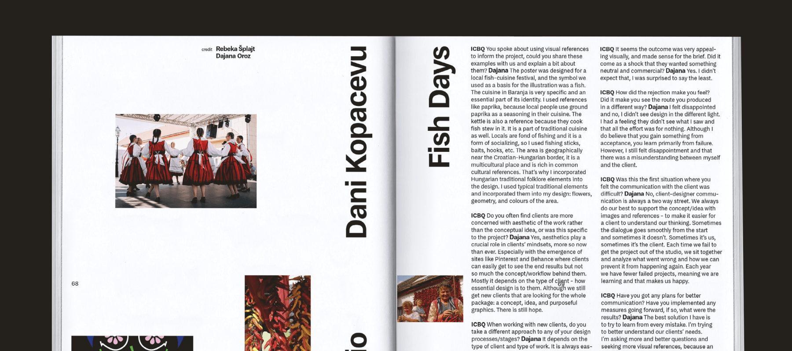
January was also when I received a copy of ICBQ, a magazine focussed on side projects, rejected proposals, and unreleased design work. Issue 5 (published late 2020) is set almost exclusively in MD System, and though it isn’t the first time my work has been used in print, it’s the first usage I’ve seen in person. The joy of seeing my letters used in someone else’s work is still not wearing off in the slightest.
In February my studio, Mass-Driver, turned one year old. Year One started out disastrously, but picked up over time — by the start of 2021, I felt like I had just about hit my stride. It’s still not easy, but I’d be lying if I said it wasn’t fun.
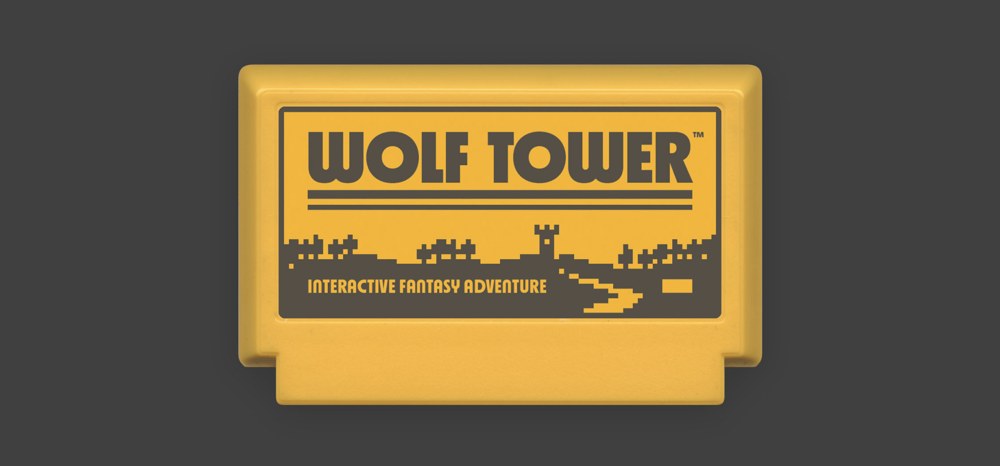
March saw the release of MD Nichrome’s 0.7 update, in which I added two sets of stylistic alternates with an even-heavier-than-usual ’70s look. And for the second year running, I got to use the typeface ‘in the real world’ for my 2021 Famicase entry, Wolf Tower.
Later in the month, I was also asked to present at the BNO’s monthly Zefir7 design talks, alongside Jacob Wise. Since this was an online talk, the recap is still available to watch (Jacob’s talk starts around the 14-minute mark, mine at around 37 minutes).
Unfortunately not available to rewatch is a subsequent presentation for ATypI Tech Talks in May, in which I gave an outline of how the Mass-Driver Workshop tools function under the hood. I also announced the release of a tool for analysing vertical metrics in font files, which I have still not finished.
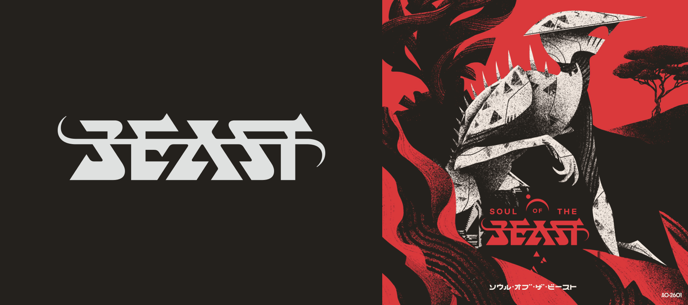
In April, I worked on the wordmark for Aeriform’s Soul of the Beast, an Atari 2600 adventure game inspired by the 1989 Amiga classic, Shadow of the Beast. The ‘Beast’ lettering is my work, with the other layout elements by Michael Christophersson, and illustration by Helvetica Blanc.
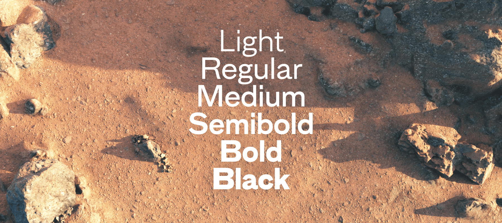
At the end of May, I released a new typeface, MD Primer. Based on a range of sans-serif designs from the 19th century, MD Primer is my most research-informed design to date, and the first release for which I had a genuine ‘launch strategy’. Themed around the typeface’s original concept, ‘the beauty of the unrefined,’ I commissioned Tom Benford to produce a series of renders of Martian rocks and soil at different times of day. These renders served as the hero artwork for MD Primer’s release, and on the website were synced to the user’s mouse position.
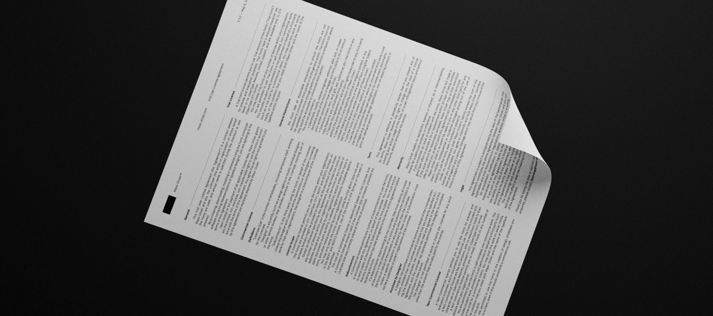
At the same time as MD Primer, I also published a complete overhaul of my font license agreement. There’s a blog post which goes into some more detail, but in short: I care a lot about licensing, and the new model is designed to protect small customers and ensure big ones pay their fair share.
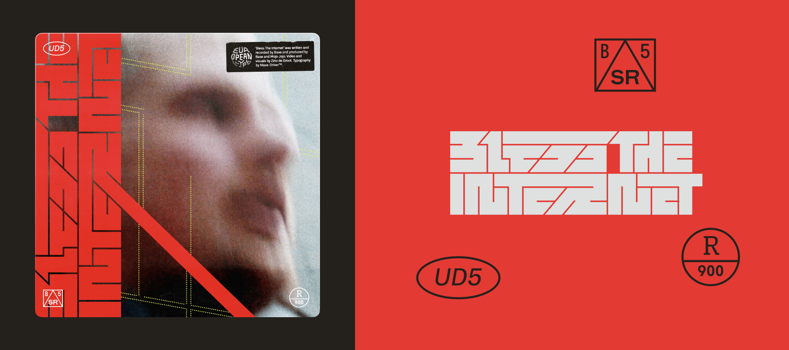
In June, I designed some custom title lettering and a handful of typographic details to adorn the cover of Base’s latest single, Bless the Internet.
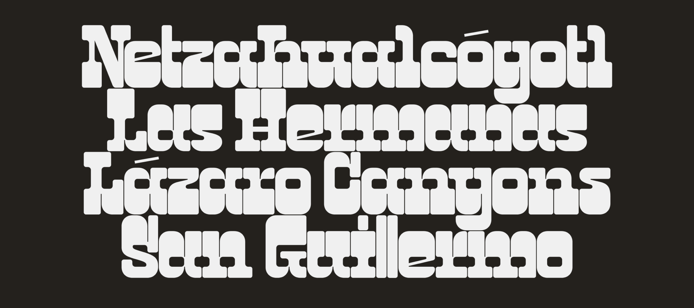
Over the summer, I also briefly worked on the OpenType Layout code for Jacob Wise’s typeface, WT Zaft², designed in collaboration with Céline Hurka — specifically, I worked on the A1 and A2 styles’ contextual alternates feature, which dynamically ‘tucks in’ or removes serifs to produce more consistent spacing.
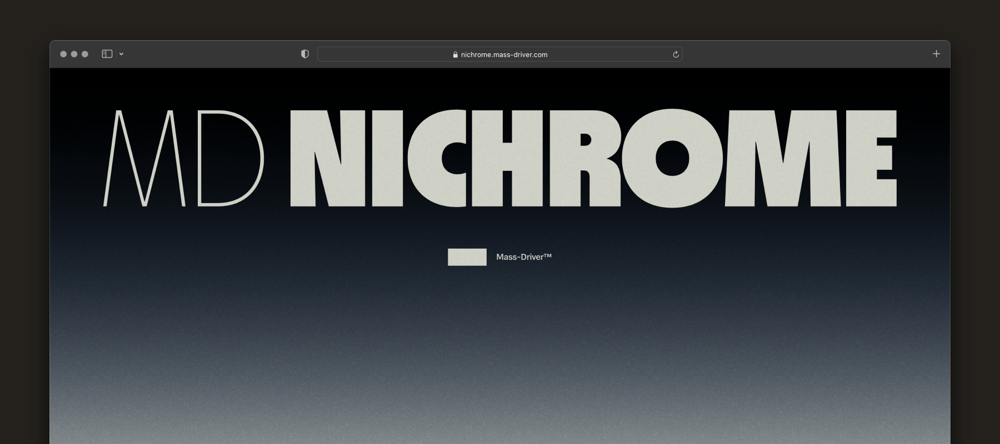
On August 17 — three months exactly since I published MD Primer — I released the final version of MD Nichrome, after a year and a half of WIP releases via Future Fonts. On top of the surprise addition of italics, I created a video to advertise the release, alongside a microsite built from the ground up to highlight the design’s key features. Shortly afterwards, MD Nichrome was featured in the AIGA’s Eye on Design magazine, and I also published my own article detailing the process behind the design.
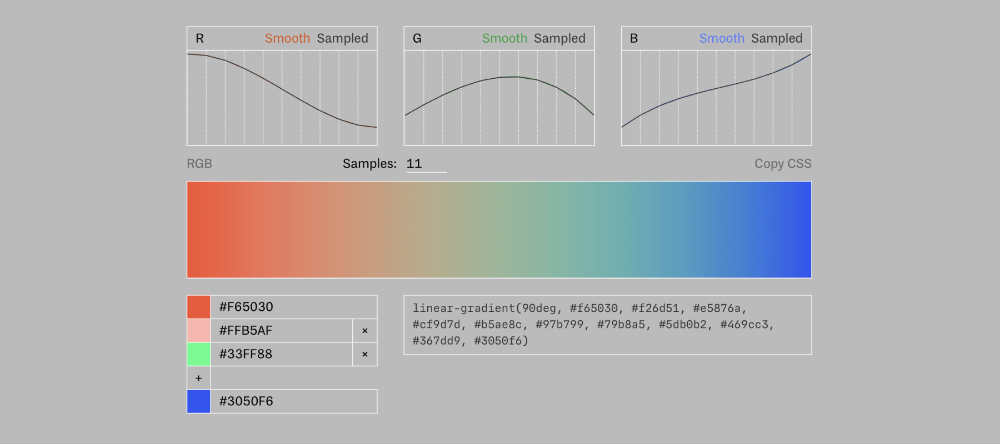
A big part of the design of the microsite for MD Nichrome was the gradient background — a smooth transition from black to bright blue, via sage green, orange, and hot pink. This was quite frankly a nightmare to make, since virtually no design tools can plot a gradient that smoothly interpolates between three or more colours. I ended up making my own custom tool for this, which I published as part of the Mass-Driver Workshop in October.
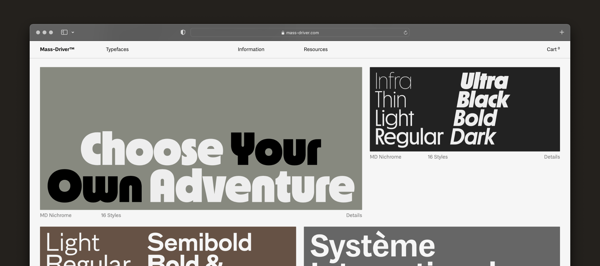
November saw the (minimally-fanfared) launch of the Mass-Driver website’s third version. This is a much less radical change than v2, but still a fairly large effort. I made a number of improvements on the back-end and fixed a year’s worth of bugs and weird behaviours, as well as switching from a 12-column to an 8-column layout.
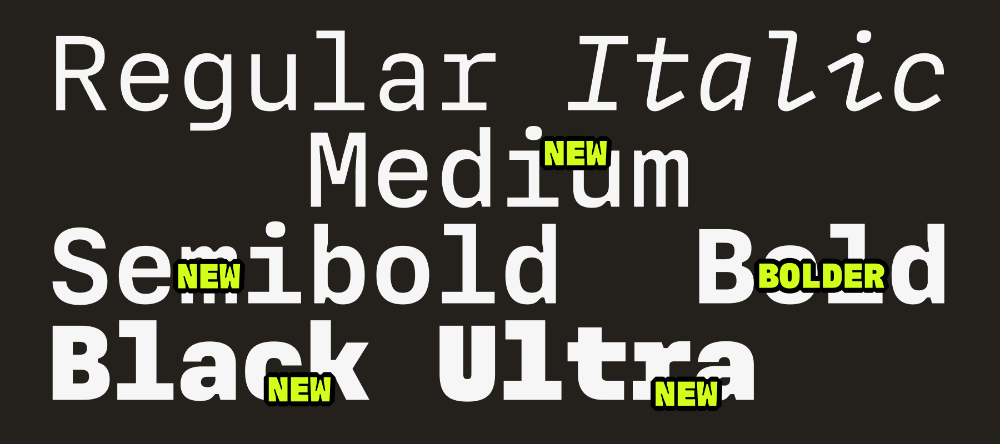
Finally, at the end of November I released the fourth update to MD IO, which added four new weights to the design. (The third update, which added italics, was released earlier on in September.) It was nice to have both started and finished the year with this design, which remains a delight to work on and sets the gold standard for glyph set, font metrics, and drawing quality going forward.
In December, I’ve taken some time off to rest, visit family, and spend time with my partner. While I love the hectic pace of work normally, I value my time away from it — and whenever I return after a break, I come back with new insight and even greater enthusiasm.
It’s been a privilege to spend 2021 doing what I love. It goes without saying that this year was not without its challenges, but I’m fortunate to have been able to keep working through much of the turmoil.
With luck, 2022 will be more of the same — though with even greater luck, it will also allow me to slow down a little and devote more time to personal growth and side projects. I deeply love my studio and the work I’m able to produce for it, but the hand of commercialism still pulls at its strings. As the company now begins to sustain itself, I’m excited to explore more esoteric ideas and spend a little more time away from the screen.
Happy New Year from a rainy English hillside, and I wish you the best for 2022.
Ruth